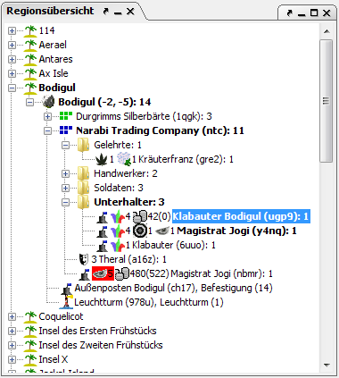

In the region widnow all units and regions are displayed in a tree. The tree's structure is set up as follows, in descending order:

Nodes that have units with unconfirmed orders are shown in bold. The display of the region window can be adjusted to your tastes in the options.
Units have a context menu that can be opened by right-clicking on them. This menu has the following options:
The faction node has an alliance status icon that shows your HELP status to this faction. Green squares mean this HELP status is set, red squares mean it's not. The squares have the following meaning: silver, combat, give, guard, factionstealth. Your own faction's squares are shwon in blue.